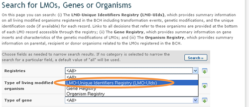
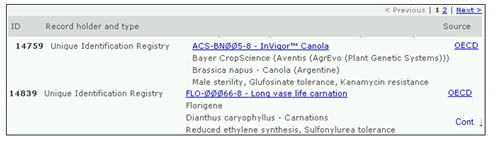

El Registro de Ovm e Identificadores Exclusivos contiene todos los registros de OVM, los cuales incluyen información sobre el evento de transformación, la modificación genética y el código de identificación, si está disponible. Los registros proporcionan vínculos a todas las decisiones y evaluaciones de riesgo que hacen referencia a estos organismos.

Para refinar los resultados de la búsqueda a registros en el directorio de LMO e identificadores exclusivos seleccione esa opcion en el campo Registros. Los registros de OVM proporcionan la siguiente información:
-
Información de contacto de quien lo desarrolló o de la compañía o solicitante;
-
El nombre y la identidad del OVM (nombre comercial);
-
Identificación única (cuando está disponible)
-
Información sobre OVM relacionados
-
Información sobre organismo receptor o parental (incluyendo nombre taxonómico, nombre(s) común(es) y lugar de recolección o adquisición
-
Información sobre el OVM (incluyendo Evento de transformación, Técnicas de modificación usadas, Genes insertados, Organismo(s) donador(es), lugar de recolección o adquisición, Rasgos introducidos o modificados y Descripción de la modificación genética;
- Cualquier otra información pertinente y referencias.
Una vez que un registro es seleccionado (ya sea desde los resultados de búsqueda o desde la información compilada), se muestra la información en pantalla.
Arriba de cada registro de OVM aparecen tres pestañas con vínculos a:
-
Información sobre OVM;
-
Decisiones sobre el OVM; y
-
Evaluaciones de Riesgo.

La pestaña Información sobre OVM muestra la información general sobre el OVM incluyendo su nombre, evento de transformación, identificador exclusivo y otros datos.
La pestaña Decisiones sobre el OVM muestra todas las decisiones tomadas por países respecto de ese OVM en forma de tabla. La primer columna de la tabla muestra el país que toma la decisión, mientras el resto de las columnas indican que categoría de uso de OVM han sido mencionadas en esa decisión. Si una decisión de un país se refiere a un uso particular del OVM, entonces aparecerá un ícono verde en la columna correspondiente a esa categoría de uso; al hacer clic en ese ícono el usuario podrá ver el registro de la decisión y ver toda su información. Si, por ejemplo, un país ha tomado una decisión sobre usar el OVM para alimento humano, animal o procesamiento, entonces habrá un ícono verde debajo de cada una de las tres categorías en la fila correspondiente a ese país en la tabla.

La pestaña de evaluaciones de riesgo muestra una lista de todos los registros que contienen información sobre evaluaciones de riesgo sobre el OVM seleccionado.
Identificación Única
El Portal Central del CIISB utiliza sistemas de identificación única para organismos vivos modificados con el fin de facilitar la búsqueda y recuperación de información. Actualmente, el único sistema de identificación única que se utiliza a nivel internacional es el de Identificador Exclusivo para Plantas Transgénicas de la OCDE.
El Identificador Único de la OCDE es un código alfanumérico asignado a cada planta viva modificada que ha sido aprobada para uso comercial, incluido su uso como alimento humano o animal. Este código es similar al código ISBN que se usa para identificar libros. El sistema de designación de la OCDE fue diseñado para que quienes desarrollan una nueva planta transgénica puedan generar un identificador y lo incluyan en el expediente que elevan a sus autoridades nacionales en el proceso de evaluación de seguridad. Una vez aprobado, las autoridades nacionales remiten el identificador único a la Secretaría de la OCDE para ser incluido en la base de datos de productos de la OCDE, desde donde se comparte automáticamente la información con el Centro de Intercambio de Información sobre Seguridad de la Biotecnología.
Los identificadores únicos son códigos de nueve dígitos, compuestos por tres elementos separados por guiones (-). Dichos elementos son:
-
2 ó 3 dígitos alfanuméricos que designan al solicitante;
-
5 ó 6 dígitos alfanuméricos que designan al evento de transformación;
-
1 dígito numérico de verificación (el fin de este elemento es reducir la posibilidad de errores, asegurando la integridad del código alfanumérico).

Hay dos posibilidades para la designación de productos creados con más de un evento de transformación (que suelen llamarse eventos de transformación “combinados”, o en inglés “stacked events”), en los casos en que los eventos de transformación ya fueron aprobados para comercialización. El solicitante puede optar por generar un identificador único nuevo para tales productos o bien puede optar por usar una combinación de identificadores únicos de productos cuya comercialización ya fue aprobada.